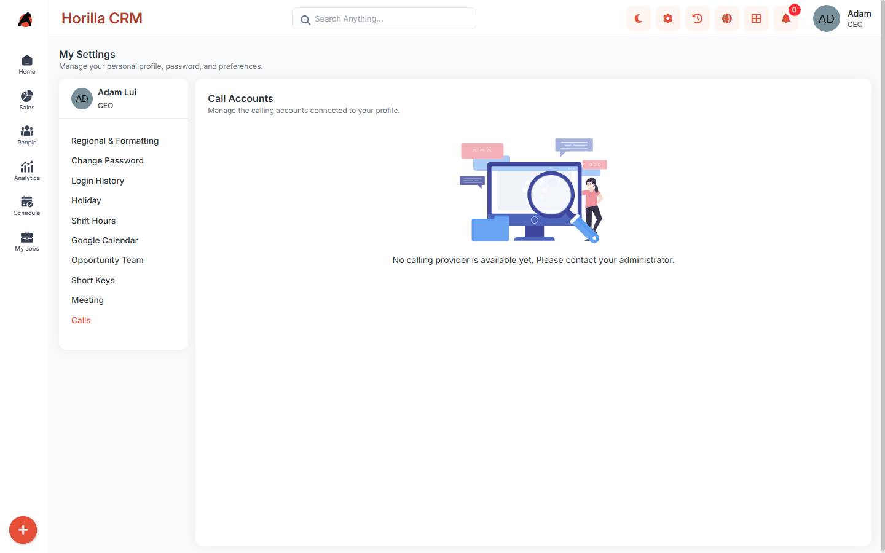

Introduction
Go to My Settings → Calls. The page title is Call
Accounts. The description is Manage the calling accounts connected to your
profile.
This page is shown when an administrator has enabled call integration for the
company and the signed-in user is allowed to use it.
Company setup is covered in Call Integration.

While no provider is Active, the page reads No calling provider is available
yet. Please contact your administrator.
A provider left Inactive or Testing does not
appear here. Mock providers are hidden.
When a provider is Active, it appears as its own card, titled with the provider
name and type. The line under the title is Configuration saved.
or Not configured
yet.
Edit Configuration opens the form. Caller ID is
optional. The placeholder is Your phone number (e.g. +919XXXXXXXXX)
, and the hint is Leave blank to use the provider's default number set by your administrator.
Save stores the number for this user only. Before the first save, How to
configure your Caller ID opens notes for that provider.